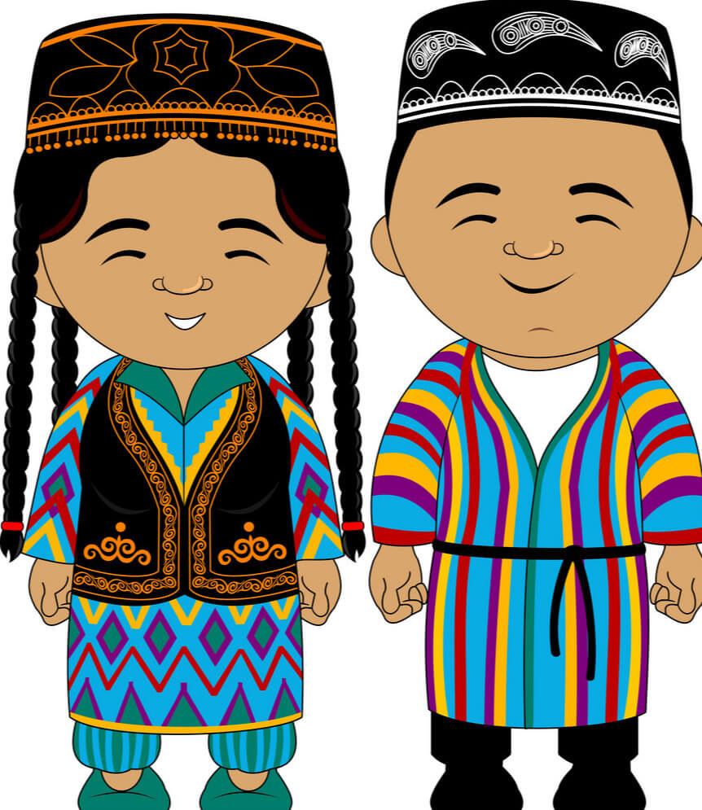
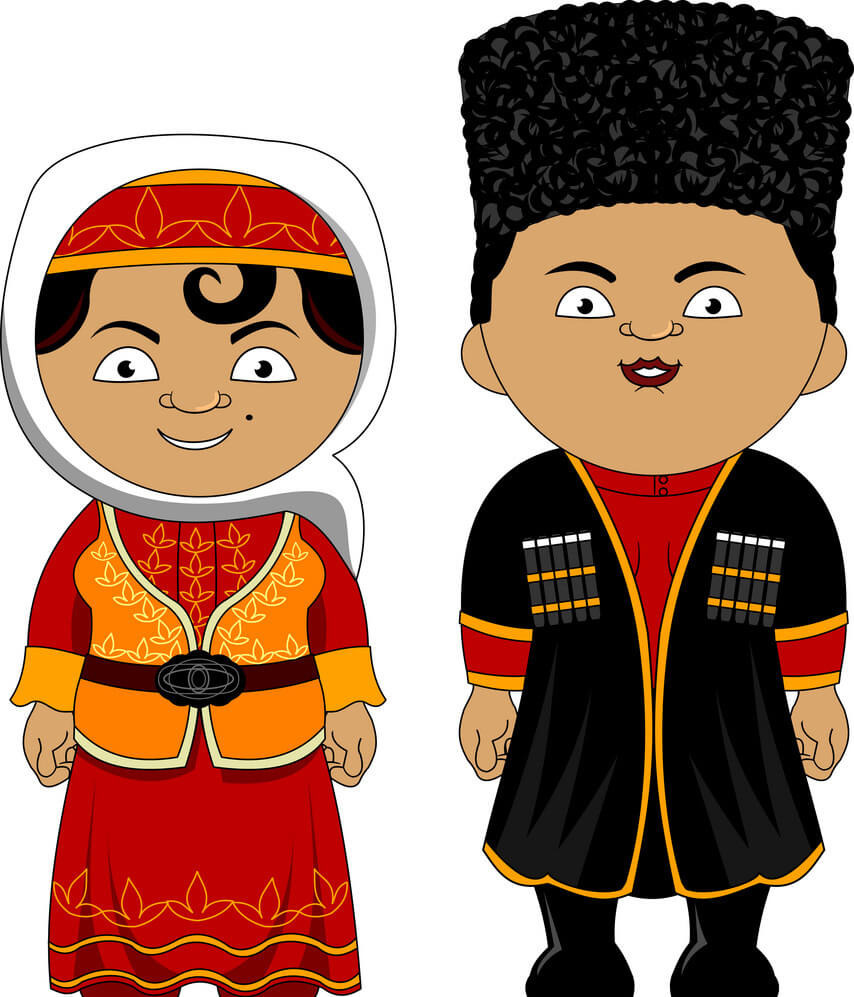

Араван району
Кыргыз Республикасынын Ош облусундагы Район.
Райондун борбору Араван айылында жайгашкан.
Кыргыз Республикасынын Ош облусундагы Район.
Райондун борбору Араван айылында жайгашкан.
Араван-Бурин районунун борбору 1934-жылы Ош шаары болгон. 29-октябрь, 1958-жылы Жаңы-Ноокат районунун аймагынын бир бөлүгү Араван районуна кошулган. Араван району 1935-жылы Ош облусунун курамында түзүлгөн. "Араван" - сөзүнүн келип чыгуу тарыхы Улуу Жибек жолуна барып такалат,арабдар Араванда токтоп, Араван сайынан суу ичишкен, ал эми сай суусу таза жана раван аккандыгынан улам Абу Раван деп аталып калган, кийинчерээк Араван болуп кеткен.
Райондун жерлери мал багууга ылайыкташтырылбагандыктан,Араван эли дыйканчылык жана соода-сатык менен алектенишет. СССР учурунда Ош облусун 25% пахтасын өстүрүп жана аны кайта иштешкен.

Араван району түштүгүнөн Ноокат району, чыгышынан Кара—Суу району, түндүгүнөн Өзбекстан Республикасы менен чектешет. Ноокат району бөлүп турган эки эксклавдан — кичирээк Батыш Аравандан жана чоңураак Чыгыш Аравандан турат.
2022—жылдагы Кыргызстандын калкын каттоо боюнча райондун калкынын саны 141 560 тургунду түзгөн.
Өзбектер - 58.7%
Кыргыздар - 39.6%
Башка улуттар - 1.7%
Район акими жана айыл-өкмөт башчылары
Кулубаев Сейтек Дөөлөтбекович
Араван районун акими 🎗️
Мамиржан Кадиров
А.Анаров айыл-өкмөтүн башчысы
Н.С.Абдураимов
С.Юсупова айыл-өкмөтүн башчысы
Райондун курамына 8 айылдык округ кирет, аларда 50 айылдык калктуу конуш жайгашкан.
2022—жылдагы Кыргызстандын калкын каттоо боюнча райондун калкынын саны 141 560 тургунду түзгөн.
Акжол Махмудов
Дуйнө чемпиону, грек-рим күрөшү
Санталатхон Юсупова
Социалистик эмгек баатыры

Дилором Рафикова
Социалистик эмгек баатыры
Хабиб Абдуллаев
Академик, Геолог
Мухаммаджон Мамасаидов
Академик, Физик

Усмон Темур
Акын
Алла Анаров
Социалистик эмгек баатыры
Хайитбой Аноров
Социалистик эмгек баатыры
Тойчи Кочубаев
Социалистик эмгек баатыры